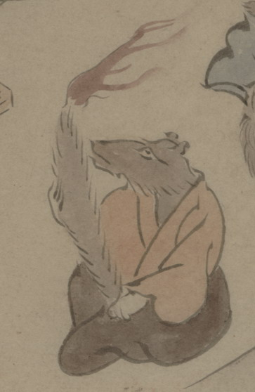

尾に火を灯した狐の化物。茶色い衣と袴を身につけて座り、先に火を灯した尾を松明のようにかかげている。
出典：親書誌：U426_nichibunken_0150：付喪神絵詞；ツクモガミエコトバ／日付：2010／資源識別子：U426_nichibunken_0150_0032_0000
Copyright (c)2010- International Research Center for Japanese Studies, Kyoto, Japan. All rights reserved.